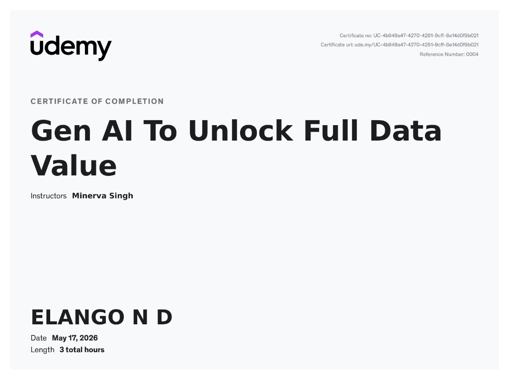
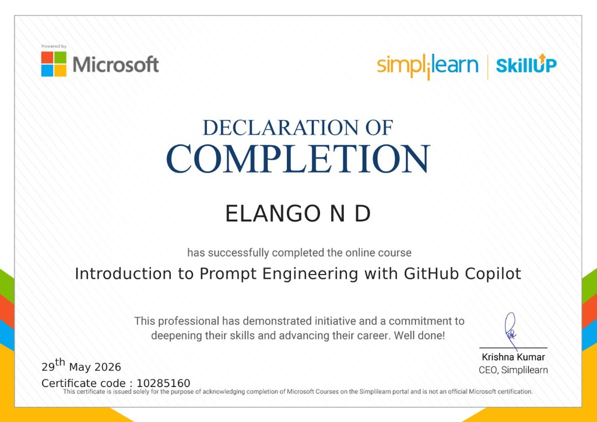
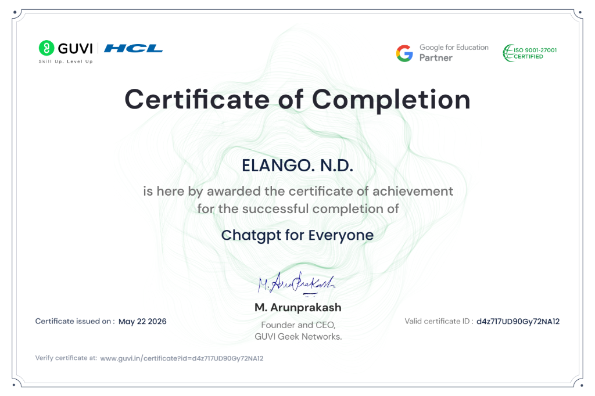
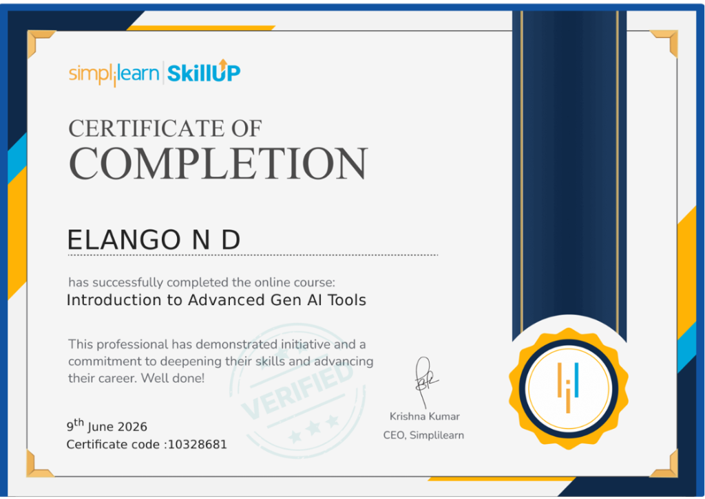
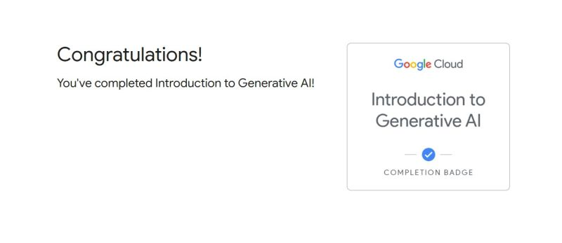

Portfolio
Projects
Hands-on work exploring AI capabilities and building real-world tools.
Story Writing using AI
Used Google Gemini to generate compelling stories and screenplays, refining advanced prompting techniques to push the creative boundaries of generative AI. Focused on iterative prompt optimization, narrative structure engineering, and exploring Gemini's maximum storytelling potential.
College Availability Finder
A web application where users can input their cutoff marks or exam scores to discover available colleges that match their profile. Powered by public APIs and an AI-driven frontend for intelligent search, filtering, and recommendations.
Learning Path
Certification Takeaways
Click any certification to explore details — what it covers, why I pursued it, and practical takeaways. Click the image for a closer look.

Gen AI To Unlock Full Data Value
Udemy · Minerva Singh · May 2026
Strategies for using Generative AI to extract, transform, and synthesize data at scale for data-centric AI workflows.
Course Demand: With enterprises rapidly adopting GenAI for data-driven decision making, professionals who can leverage AI for data extraction, transformation, and synthesis are in high demand across analytics, consulting, and product teams.
Why I Learnt This: I wanted to move beyond basic AI text generation and understand how to use GenAI as a powerful data tool — extracting insights from unstructured sources and automating analytical workflows.
Key Takeaway: Learned core strategies for using Generative AI to extract, transform, and synthesize data at scale — moving beyond simple text generation to data-centric AI workflows.
Practical Implementation: Applied prompt-based data synthesis techniques to aggregate and summarize research data, automate report generation, and build structured outputs from unstructured inputs in academic projects.
🔗 Verify Certificate
Introduction to Prompt Engineering with GitHub Copilot
Simplilearn SkillUp · Microsoft · May 2026 · Code: 10285160
Mastered AI-assisted pair programming and effective prompting for accurate, context-aware code completions.
Course Demand: AI-assisted development tools like GitHub Copilot are becoming essential in software engineering. Companies seek developers who can effectively prompt and collaborate with AI coding assistants to boost productivity.
Why I Learnt This: As someone building projects and exploring AI, I wanted to master the art of communicating with AI coding tools to write better, faster, and more reliable code.
Key Takeaway: Mastered AI-assisted pair programming — understanding how to write effective prompts that make GitHub Copilot generate accurate, context-aware code completions and full function implementations.
Practical Implementation: Significantly accelerated software development cycles by using Copilot for boilerplate generation, bug fixes, refactoring suggestions, and writing test cases during project builds.
🔗 Verify Certificate
ChatGPT for Everyone
GUVI · HCL · Google for Education · May 2026 · ID: d4z717UD90Gy72NA12
Understanding of conversational AI mechanics — how LLMs process queries, maintain context, and generate human-like responses.
Course Demand: ChatGPT has become the most widely-used AI tool globally. Understanding how to leverage conversational AI for productivity, automation, and creative tasks is a must-have skill across every field.
Why I Learnt This: I wanted a structured understanding of how LLMs like ChatGPT actually work under the hood — from query processing to context management — so I could use them more effectively.
Key Takeaway: Gained a thorough understanding of conversational AI mechanics — how large language models process queries, maintain context, and generate human-like responses across diverse use cases.
Practical Implementation: Deployed ChatGPT-driven workflows for automating repetitive tasks, building custom chat configurations for study assistance, and creating structured Q&A pipelines for research.
🔗 Verify Certificate
Introduction to Advanced Gen AI Tools
Simplilearn SkillUp · June 2026 · Code: 10328681
Evaluating and comparing frontier GenAI tools across text, image, and code generation — understanding strengths, limits, and optimal use cases.
Course Demand: The GenAI landscape evolves rapidly. Professionals who can evaluate and compare multiple AI tools — knowing when to use which — are invaluable for teams building AI-integrated products and workflows.
Why I Learnt This: After learning individual tools, I wanted to develop a bird's-eye view of the entire GenAI ecosystem so I could make informed decisions about which tool fits which task best.
Key Takeaway: Developed the ability to evaluate and compare frontier GenAI applications across text, image, and code generation domains — understanding their strengths, limitations, and optimal use cases.
Practical Implementation: Used comparative analysis to select the best AI toolchain for specific tasks — choosing Gemini for creative writing, Copilot for coding, and specialized tools for data visualization in projects.
🔗 Verify Certificate
Introduction to Generative AI
Google Cloud · Completion Badge
Foundational understanding of LLM architecture, training processes, and the role of transformer networks powering modern AI.
Course Demand: Google Cloud's AI certifications are among the most recognized globally. Understanding LLM architecture and transformer networks is fundamental for any AI/ML career path.
Why I Learnt This: I wanted to build a rock-solid theoretical foundation — understanding how transformers, tokenization, and attention mechanisms actually power the AI tools I use daily.
Key Takeaway: Built a strong foundational understanding of how Large Language Models (LLMs) work — their architecture, training processes, and the role of transformer networks in modern AI.
Practical Implementation: This architectural knowledge informs all AI engineering decisions — from understanding tokenization and context windows to knowing when to fine-tune vs. prompt-engineer models for project requirements.